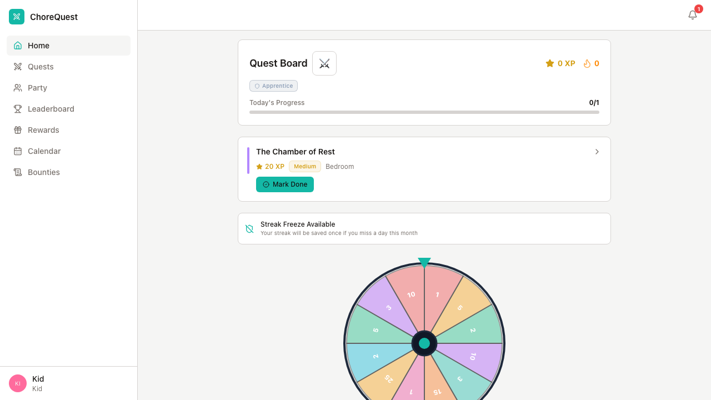
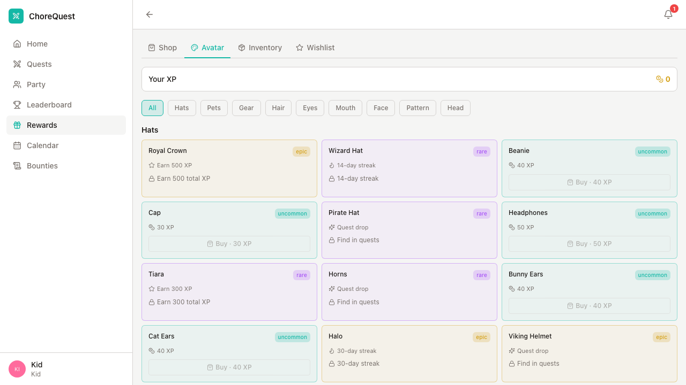
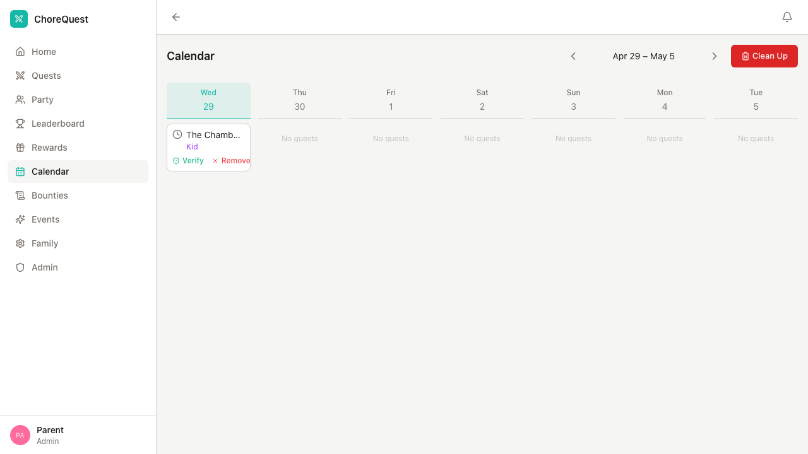
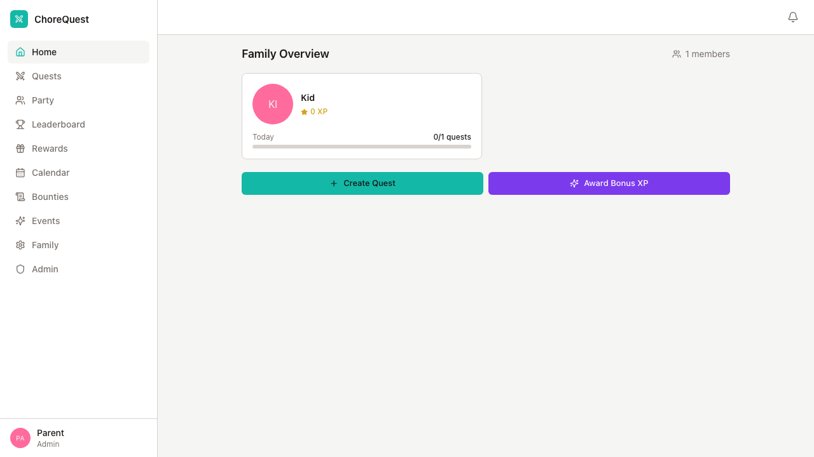
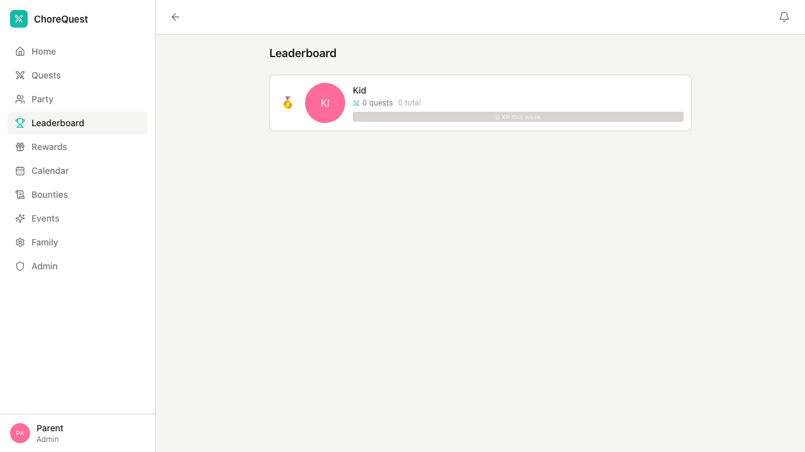
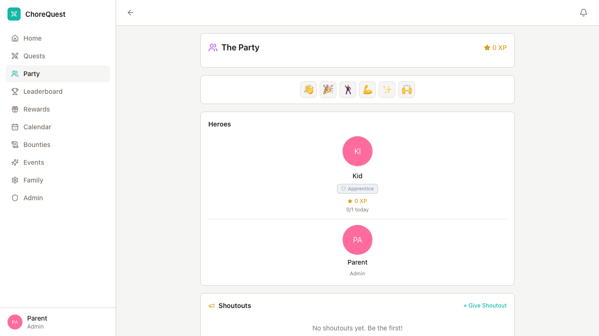

ChoreQuest is a family chore app that runs on a computer in your home. Kids earn XP, level up pets and spend rewards. Parents set the quests. Your family's data stays in your house.






Pick the computer that stays on in your house. Everyone else (phones, tablets, the kitchen TV) just opens it in a web browser.
Works on Windows 10 (version 22H2) and Windows 11. You don't need to know any programming. You'll copy and paste one block of text.
Docker Desktop is a free program that runs ChoreQuest in its own sealed box, so it can't mess with the rest of your PC.
Docker needs a Windows feature called WSL. Usually it installs it for you. If it doesn't:
wsl --install, press Enter, then restart your PC.If Docker still complains about virtualization, it has to be switched on in your PC's BIOS settings. Search the web for your PC model plus "enable virtualization". It's usually called Intel VT-x, Intel Virtualization Technology or AMD SVM.
Check that your timezone is right. ChoreQuest uses it to know when "today" starts for your family.
Next, open PowerShell: click Start, type PowerShell, and open Windows PowerShell (you don't need the Admin version). Copy the block below, right-click inside the PowerShell window to paste it, then press Enter.
The command:
ChoreQuest folder inside your user folderWhen it finishes, it prints the address phones and tablets should use, like http://192.168.1.23:8122.
The browser opens http://localhost:8122. The first account you create becomes the admin, so do this yourself before anyone else. Then see First run to add your kids.
http://192.168.1.23:8122).When the app says an update is available, paste the same install command again. It downloads the new version and restarts ChoreQuest, and your family's data stays as it is. The Apply Update button in Settings doesn't work on Windows yet.
Everything (accounts, quests, XP, photos, and the login key) lives in one folder: %USERPROFILE%\ChoreQuest\data.
data folder to a USB drive, OneDrive or anywhere safe.To restore, stop the container, put the copied data folder back in place, then start it.
Paste this into PowerShell. It stops ChoreQuest and removes the app but keeps your data folder. Delete that folder yourself if you want everything gone.
Set-Location "$env:USERPROFILE\ChoreQuest"; docker compose down --rmi all
For DSM 7.2 or newer, on a model that supports Container Manager. That includes most "+" models and many "j" and "value" models with an Intel, AMD or 64-bit ARM processor. Everything is done in the DSM web interface, and there are no files to upload.
Open Package Center, search for Container Manager and install it.
Open File Station. Inside the docker shared folder (Container Manager creates it), make a folder called chorequest, and inside that a folder called data.
chorequest. Path: docker/chorequest. Source: Create docker-compose.yml.Go to http://YOUR-NAS-IP:8122 (the same address you use for DSM, with :8122 on the end instead of :5000). Create the parent account first, then go to First run.
The data folder is never touched, so nothing is lost.
Add docker/chorequest/data to Hyper Backup or a Snapshot Replication schedule. That folder has everything.
Any machine with Docker on an Intel/AMD or 64-bit ARM processor. That includes Docker Desktop on Mac, a Raspberry Pi 4/5 running the 64-bit Raspberry Pi OS, Ubuntu or Debian servers, and NAS systems that run containers.
Then open http://THIS-MACHINE-IP:8122. To update, run docker compose pull && docker compose up -d in the same folder. Your data in ./data stays put.
chorequest. Repository: ghcr.io/turbogizzmo/chorequest:latest.8122, host 8122/app/data, host /mnt/user/appdata/chorequestTZ, value your timezone (for example America/Chicago)ghcr.io/turbogizzmo/chorequest, tag latest.TZ with your timezone.8122 to node port 8122./mnt/tank/apps/chorequest) mounted at /app/data.Any tool that accepts a compose file works. Paste the services: part of the block above into its "create stack" or "custom app" screen. What ChoreQuest needs:
ghcr.io/turbogizzmo/chorequest:latest8122/app/dataTZ environment variableSettings like push notifications and HTTPS are covered in the README's configuration section, along with building from source.
About ten minutes, whichever setup you picked.
The first account becomes the admin. After that, nobody can sign up without an invite code you make, so strangers can't join.
Go to Admin → Invite codes, make a code for each person, and sign them up on their own device. Younger kids can use a short PIN instead of a password.
Open Quests → New Quest Scroll. Pick an XP value, who it's for, and how often it repeats (daily, certain weekdays, or rotating between kids).
Add rewards the kids can buy with XP: screen time, picking dinner, a trip for ice cream.
A kitchen wall display (Settings → Family Dashboard), AI quest drafting, and push notifications. The wiki covers each one.
New-NetFirewallRule -DisplayName "ChoreQuest" -Direction Inbound -Protocol TCP -LocalPort 8122 -Action Allow -Profile Private
This only opens ChoreQuest's port, and only on networks marked Private.
Your router hands out addresses and sometimes changes them. In your router's settings, look for DHCP reservation or static IP and reserve the current address for this PC or NAS. It's usually under LAN or DHCP settings.
Yes, and you don't have to open ports on your router. The simplest way is Tailscale (free for families): install it on the ChoreQuest computer and on each phone, then use the Tailscale address. For a public web address with HTTPS, see Cloudflare Tunnel in the README.
Push notifications need HTTPS, so they only work with the Cloudflare option.
No. Everything is stored on your own computer. ChoreQuest only connects to the internet to check GitHub for updates and, if you turn it on, to send AI quest-drafting requests to the provider you choose (never your saved chore list).
Very little: around 100–200 MB of memory and almost no CPU while idle. Docker Desktop itself uses more, about 1–2 GB of memory on Windows.
More answers in the Troubleshooting wiki page.
Coming next to make setup simpler. Want one sooner? Say so in an issue.
| Option | What it changes | Status |
|---|---|---|
| Ready-made Docker image | Docker downloads a finished image for Intel/AMD and 64-bit ARM. No code to download and no build to wait for. | Available |
| Auto-generated secret key | No .env file or secret to paste. ChoreQuest creates one on first start. | Available |
| Synology: paste-in project | A short compose snippet pasted into Container Manager. No files to upload. | Available |
| One-click updates for image installs | Makes the Apply Update button work on Windows, Synology and other image installs. | Planned |
| Unraid Community Apps | Search "ChoreQuest" in the Apps tab and click Install. Until then, use the manual Unraid steps. | Planned |
| TrueNAS SCALE / CasaOS / Umbrel app stores | One-click install from each system's app store. | Planned |
| Windows installer (no Docker) | A normal ChoreQuest-Setup.exe that installs and starts with Windows. Docker Desktop not needed. | Exploring |
| One-click cloud hosting | Deploy to a hosting service (Fly.io, Railway, Render) with a persistent disk. Includes HTTPS, works away from home, and push notifications work. Costs about $3–7/month. | Exploring |